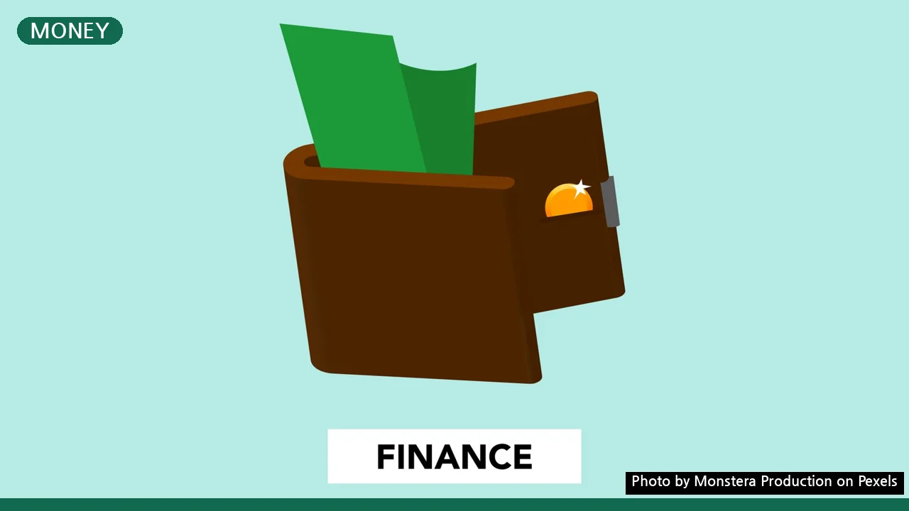
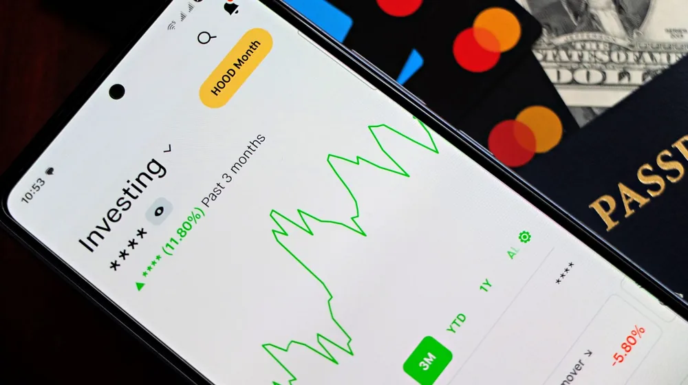

신용점수 100점 올리는 9가지 방법, 놓치면 손해 보는 의외의 습관은?
사진: Monstera Production / Pexels (무료 이미지, 출처 표기)
신용점수, 왜 중요할까요?

신용점수는 금융 생활의 ‘성적표’와 같습니다. 대출을 받거나 신용카드를 발급받을 때, 심지어 전세자금 대출이나 휴대폰 개통까지 영향을 미치죠. 신용점수가 높으면 더 낮은 금리로 대출을 받거나, 더 유리한 조건으로 금융 상품을 이용할 수 있어 경제적 이득이 커집니다. 반대로 신용점수가 낮으면 불이익이 많아지고요. 복잡하게 느껴지더라도, 몇 가지 습관만 잘 지키면 누구나 신용점수를 높일 수 있습니다.
기본 중의 기본! 연체 없는 상환 습관 만들기
신용점수 관리에 있어 가장 중요하고 기본적인 원칙은 바로 '연체'를 피하는 것입니다. 단돈 1원이라도, 단 하루라도 연체 기록이 남으면 신용점수 하락으로 이어질 수 있으니 각별한 주의가 필요합니다.
- 1. 소액이라도 단 하루의 연체도 피하기: 카드 대금, 대출 이자, 휴대폰 요금, 공과금 등 모든 금융 및 통신 대금은 납기일을 철저히 지켜야 합니다. 자동 이체를 설정하고, 통장 잔고를 미리 확인하는 습관을 들이세요.
- 2. 신용카드 한도 대비 30~50% 이내로 사용하기: 신용카드 사용액이 한도에 가깝게 높을수록 신용점수에는 부정적인 영향을 미칩니다. 한도의 절반 정도만 사용하는 것이 신용점수 관리에 유리합니다. 예를 들어, 한도가 300만원이라면 90만원에서 150만원 사이로 사용하는 것이 좋습니다.
일상에서 신용도를 높이는 의외의 방법 3가지
금융 거래 외에도 일상생활 속 작은 습관들이 신용점수에 긍정적인 영향을 미칠 수 있습니다. 꾸준히 실천하면 점수 상승에 도움이 되는 방법들입니다.
- 3. 통신비, 공과금 등 비금융 정보 성실납부 내역 제출하기: 통신 요금, 건강보험료, 국민연금, 도시가스 요금 등 비금융 정보를 꾸준히 성실하게 납부했다면, NICE평가정보 또는 코리아크레딧뷰로(KCB) 같은 신용평가사에 직접 제출하여 가점을 받을 수 있습니다. 각 신용평가사 웹사이트에서 '비금융정보 등록' 또는 '신용점수 올리기' 메뉴를 찾아 이용하세요.
- 4. 체크카드를 꾸준히 사용해 신용도 가점 확보하기: 신용카드 사용이 부담스럽다면 체크카드를 꾸준히 사용하는 것도 좋습니다. 매월 일정 금액 이상(예: 30만원 이상)을 6개월 이상 사용하면 신용평가사에서 가점을 부여하기도 합니다. 이는 무분별한 신용카드 발급 없이 신용 이력을 쌓는 좋은 방법입니다.
- 5. 주거래 은행을 정하고 꾸준히 거래하기: 특정 은행과 오랜 기간 거래하며 급여 이체, 적금 가입, 자동 이체 등의 거래 실적을 쌓으면 우대 고객으로 분류되어 신용점수 가점이나 대출 시 금리 혜택을 받을 수 있습니다.
대출과 신용카드, 현명하게 관리하는 법
대출이나 신용카드 사용은 신용점수에 큰 영향을 미칩니다. 현명하게 관리하면 점수를 높일 수 있지만, 잘못 관리하면 치명적인 독이 될 수 있습니다.
- 6. 불필요한 대출은 자제하고, 대출 시에는 제1금융권 이용하기: 대출 건수가 많거나, 제2금융권(저축은행, 캐피탈 등) 및 대부업 대출을 이용하면 신용점수 하락 폭이 커질 수 있습니다. 불가피하게 대출이 필요하다면 금리가 낮고 신뢰도 높은 제1금융권(시중은행)을 이용하는 것이 유리합니다.
- 7. 과도한 신용카드 발급과 단기 카드대출은 피하기: 단기간에 여러 장의 신용카드를 발급받으면 신용 조회 기록이 많아져 신용점수에 부정적인 영향을 줄 수 있습니다. 또한, 현금서비스(단기 카드대출)는 대출로 분류되어 신용점수 하락의 주범이 되므로 꼭 필요한 경우가 아니라면 사용하지 않는 것이 좋습니다.
지금 당장 시작! 신용점수 무료 조회 및 불이익 예방
신용점수 관리는 현재 내 점수가 어느 정도인지 아는 것에서부터 시작합니다. 정기적인 확인과 위험 요소 제거는 필수입니다.
- 8. 정기적으로 신용점수 무료 조회로 현황 파악하기: 신용평가사(NICE, KCB)는 연간 3회까지 무료 신용점수 조회를 제공합니다. 조회가 신용점수에 영향을 미치지 않으니 안심하고 주기적으로 자신의 신용점수를 확인하고 관리하는 습관을 들이세요. 혹시 모를 잘못된 정보가 없는지 점검하는 기회가 되기도 합니다.
- 9. 타인의 보증은 절대 서지 않기: 보증은 타인의 빚을 대신 갚아야 할 위험을 안는 행위입니다. 보증을 서는 순간 보증인의 신용도까지 대출자와 연계되어, 대출자가 연체할 경우 보증인의 신용점수도 함께 하락합니다. 어떠한 경우에도 타인의 보증은 피하는 것이 현명합니다.
신용점수는 단기간에 급격히 오르기 어렵지만, 꾸준한 노력과 올바른 금융 습관을 통해 충분히 개선될 수 있습니다. 위에서 제시된 9가지 방법을 생활 속에 적용하여 자신감 있는 금융 생활을 시작하시길 바랍니다. 정확한 사항은 각 금융기관의 공식 홈페이지나 신용평가사에서 다시 확인하시길 권장합니다.
🔗 이 글도 함께 보면 좋아요: 코스피 하락, 불안한 투자자라면 꼭 알아야 할 3가지 핵심 원인